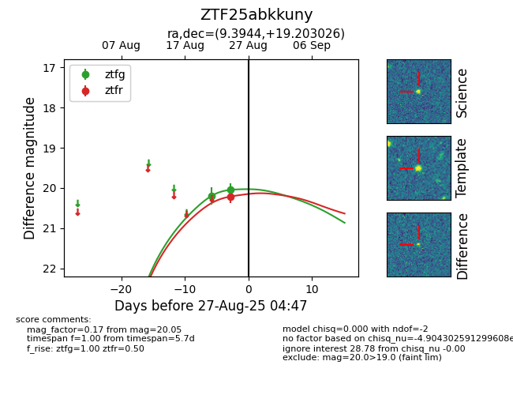

Target ZTF25abkkuny at 2025-08-27 09:37, see:
FINK: fink-portal.org/ZTF25abkkuny
Lasair: lasair-ztf.lsst.ac.uk/objects/ZTF25abkkuny
ALeRCE: alerce.online/object/ZTF25abkkuny
alt names
ZTF25abkkuny (ztf,fink)
coordinates:
equatorial (ra, dec) = (9.3944,+19.20303)
galactic (l, b) = (118.4153,-43.54714)
photometry
last ztfg=20.05, ztfr=19.89
2 ztfg, 2 ztfr detections
